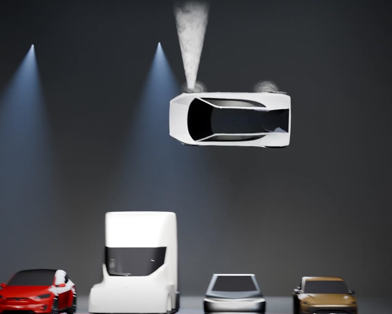
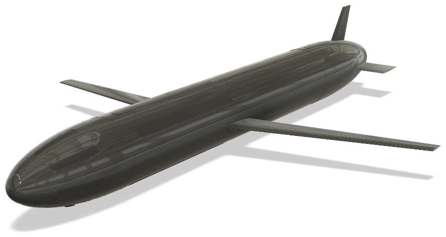

About
Simulator Test & Integration at CT Ingenieros on the Airbus A400M full-flight simulator in Getafe, since March 2026. Preparation and verification of the simulator for certification test campaigns, real-time troubleshooting during live sessions and validation of software updates against real avionics.
Final year of a BSc in Aerospace Engineering at Universidad Europea de Madrid, taught in English. Certificates from the University of Colorado Boulder in spacecraft dynamics and attitude control.
Main interest in guidance, navigation and control: rigid-body dynamics, attitude control and closed-loop simulation, written and tested in Python.
- Location
- Madrid, Spain
- Current
- A400M simulator · CT Ingenieros
- Focus
- GNC · Attitude dynamics
- Programming
- Python · C++ · MATLAB
- Simulation
- OpenFOAM · ANSYS · Simulink
- Languages
- Spanish · English (C1/C2)
- Citizenship
- Spanish (EU) · Colombian
Projects
Roadster Hop: 6-DOF GNC Simulation
Simulation of the Tesla Roadster cold-gas thruster hop: powered take-off, a full barrel roll over a lineup of cars, hover and soft landing. Dynamics, control allocation and guidance written from scratch, with the 3D render driven by the simulation output.

openLodestar: Spacecraft Attitude Simulator
Open-source spacecraft attitude dynamics and control simulator. Quaternion kinematics and Euler's equations, closed-loop slew-and-hold manoeuvres with 3 reaction wheels and a quaternion-feedback PD controller, and the Dzhanibekov effect reproduced in a 3D animation.
SEPHAR: Underwater Glider for Europa
Buoyancy-driven autonomous glider for the subsurface ocean of Europa. Statically unstable in pitch by design and flown by a cascaded controller on a sliding internal mass, with gains sized from the OpenFOAM CFD results. 9-state longitudinal model and full 100 km mission simulation.

Simulator Session Manager
Internal tool that standardizes the preparation of each A400M simulator test session: a 7-category checklist across 3 linked sheets, generated in Python with formulas and conditional formatting.
Contact
Best reached by email.